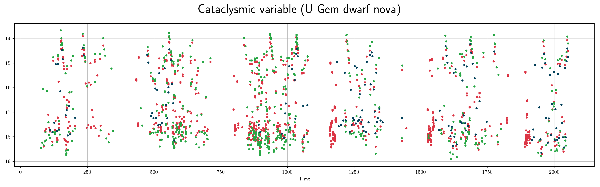
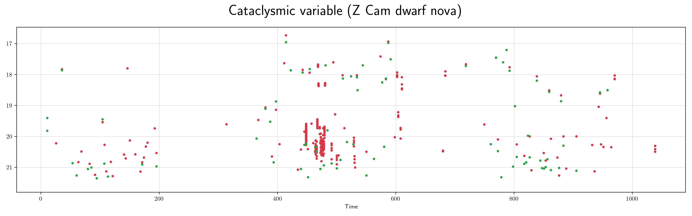
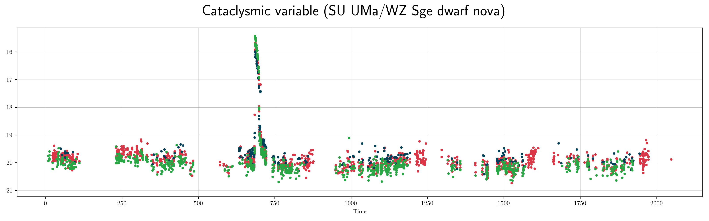
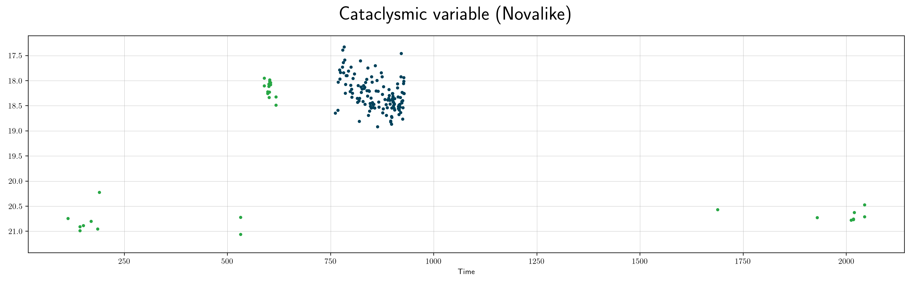
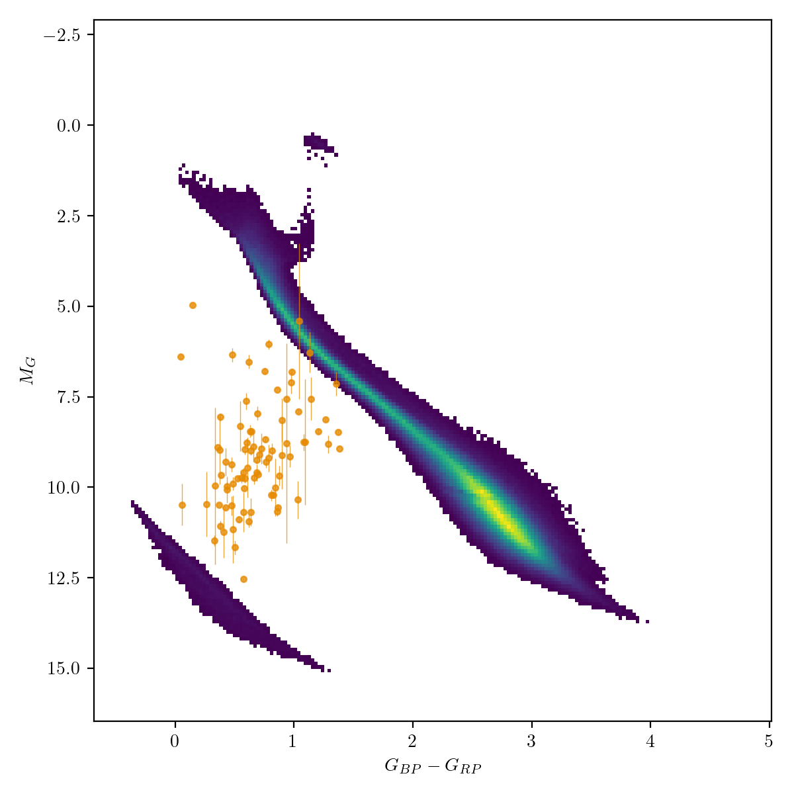

Cataclysmic Variables (cv)¶
Cataclysmic variables are close binaries with active mass transfer from a late type main sequence star or brown dwarf to a white dwarf. There are several different types of CVs, depending on their causes of variability. These include novae (which have 9-15 mag outbursts from thermonuclear events on the white dwarf surface), dwarf novae which have 2-9 mag outbursts on weeks to decades timescales due to disk instabilities) and novalikes which do not have outbursts but have high and low states of accretion which cause several magnitudes of brightness change.
Classification and numbers¶
Supertypes
variable
aperiodic outbursts
aperiodic high and low states
periodic orbital variability
Subtypes
Nova
U Gem dwarf nova
Z Cam dwarf nova
SU UMa/WZ Sge dwarf nova
Novalike
Occurrence rate: common, several thousand expected in ZTF data
ZTF light curves¶
   
Description¶
CVs are easy to recognize by their distinctive light curve shape, colors and high amplitude variability. The outbursts are non-periodic. They can sometimes be confused with supernovae, flare stars or long period variables.
Light curve characteristics¶
non-periodic variable but recur on some timescale
outburst timescale range: days to decades
amplitude: 9-15 mag (nova), 2-9 mag (dwarf nova), 1-4 mag (novalike)
light curve shape:
sawtooth; steep rise and slow decay (subtype nova)
symmetrical to slightly sawtooth (subtype U Gem)
standstills about 1 mag below outburst level for weeks (subtype Z Cam)
fast rise and extended plateau for 1-2 weeks followed by steeper decline (subtype SU UMa/WZ Sge)
extended (days-weeks) states at either high or low brightness
can show periodic modulation of the light curve on orbital timescales of hours
Other characteristics and selection methods¶
intrinsic CV colors: blue, (g-r < 0.6). Reddening is usually not important except for places in the galactic plane.
absolute magnitude at quiescence: 8<G<14

References and further reading:¶
Warner 1995: Cataclysmic Variable Stars